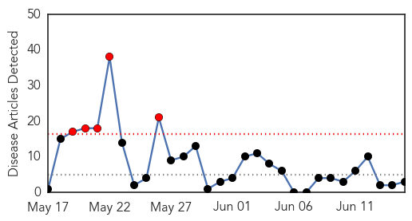
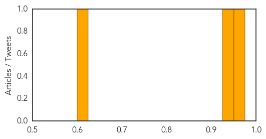

Cholera
30-Day Web Trend
5 alerts, 0 warnings

30-Day Twitter Trend
3 alerts, 0 warnings
Article Locations
Article Confidences
Top Articles:
Top Tweets:
-
No tweets found for Jun 15, 2015
Chikungunya
30-Day Web Trend
3 alerts, 0 warnings

30-Day Twitter Trend
0 alerts, 0 warnings

Article Locations

Article Confidences

Top Articles:
Top Tweets:
-
No tweets found for Jun 15, 2015